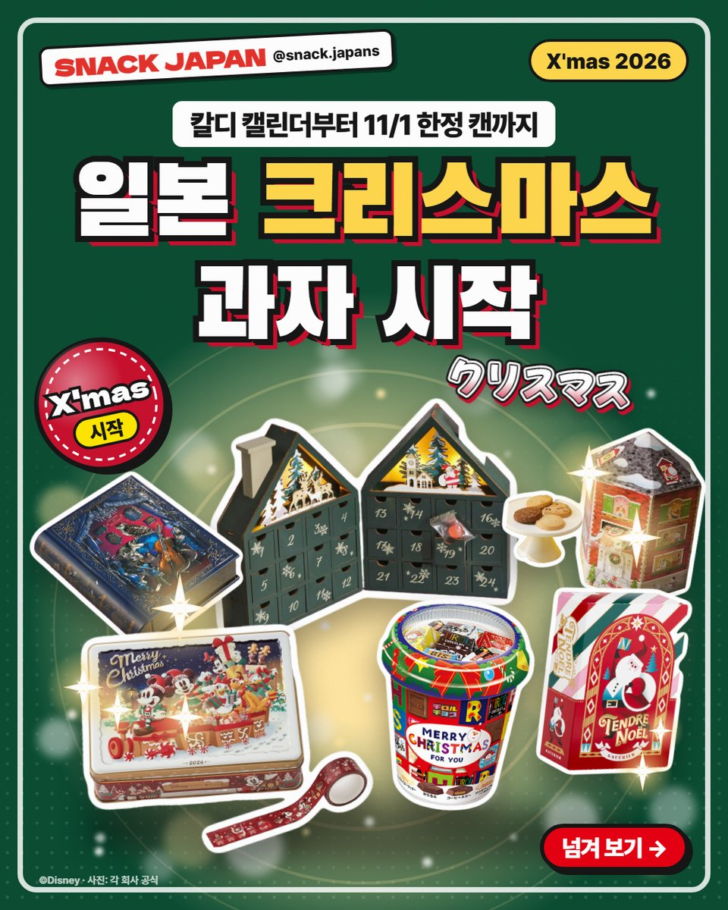
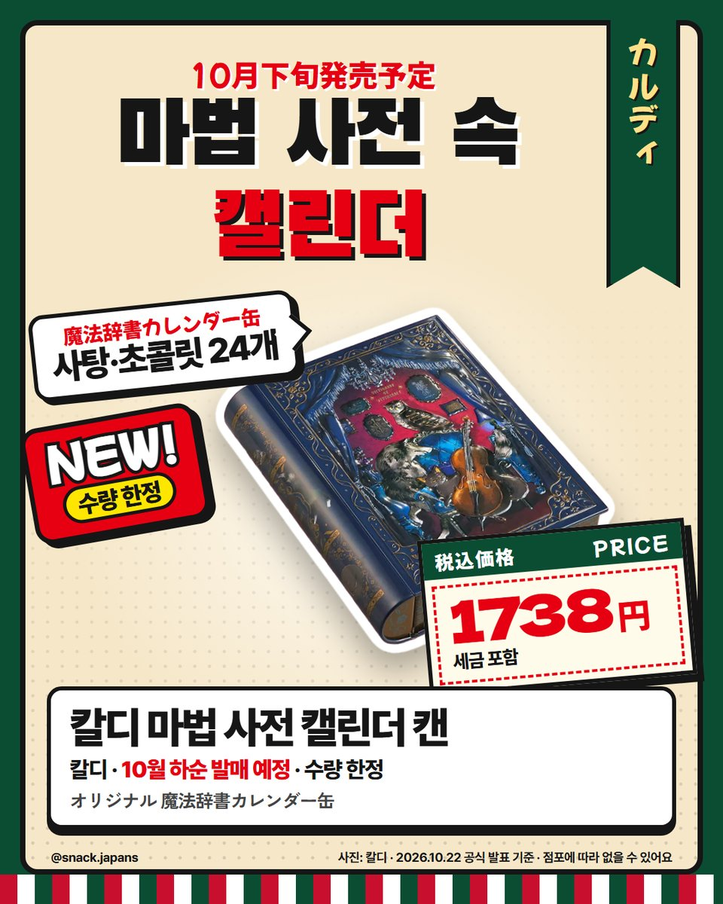
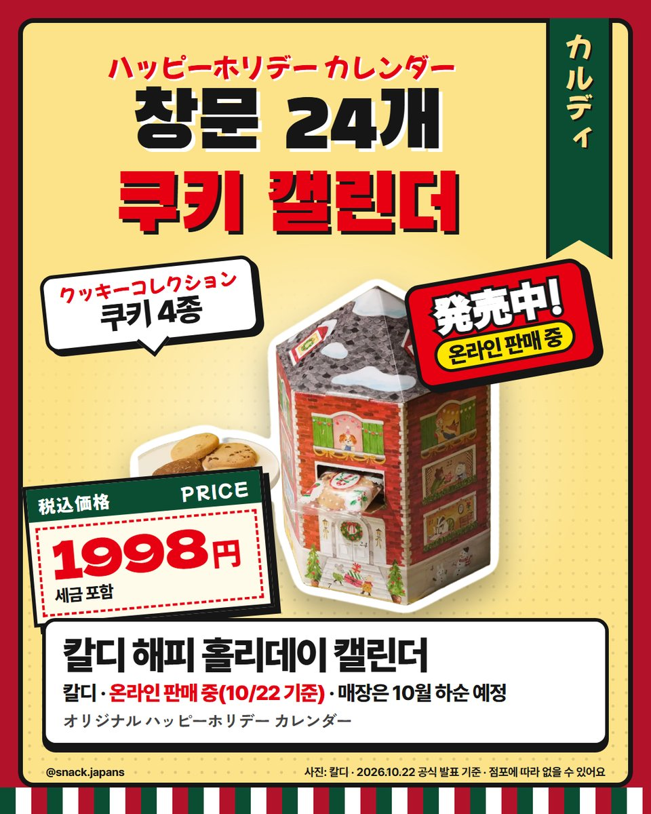
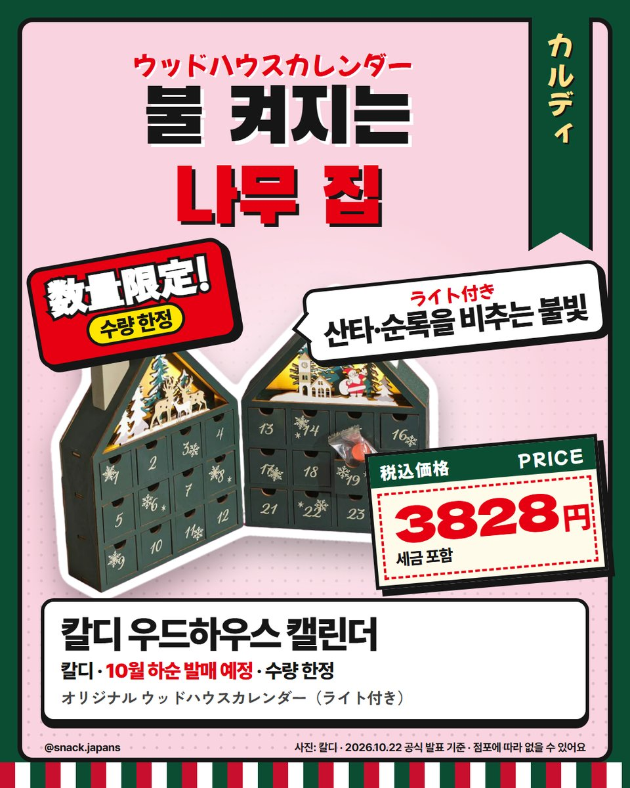
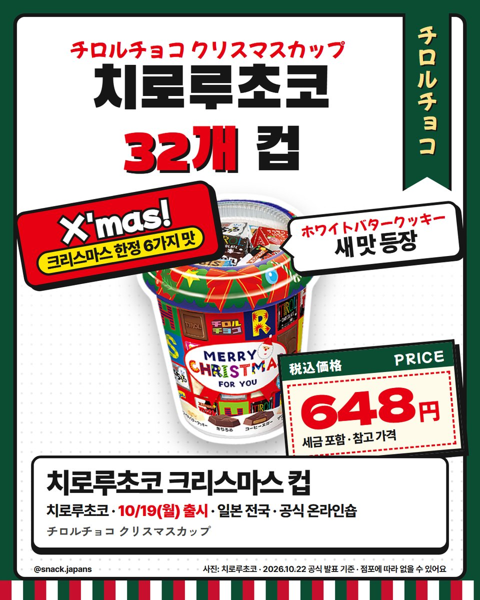
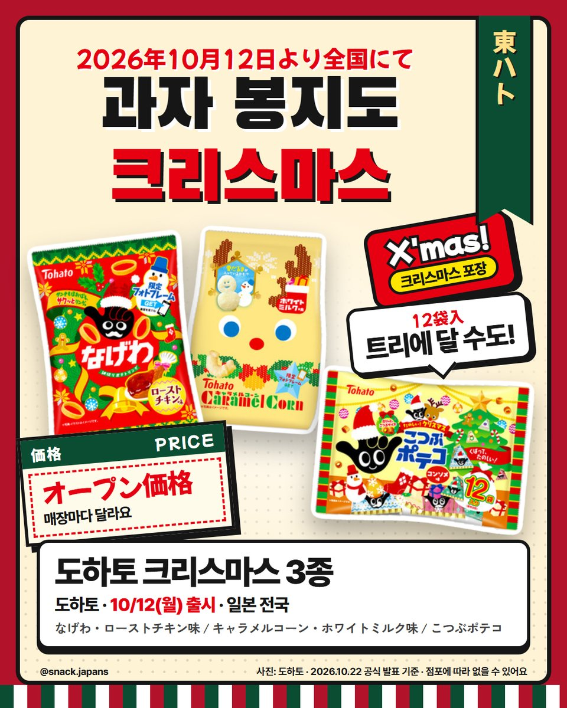
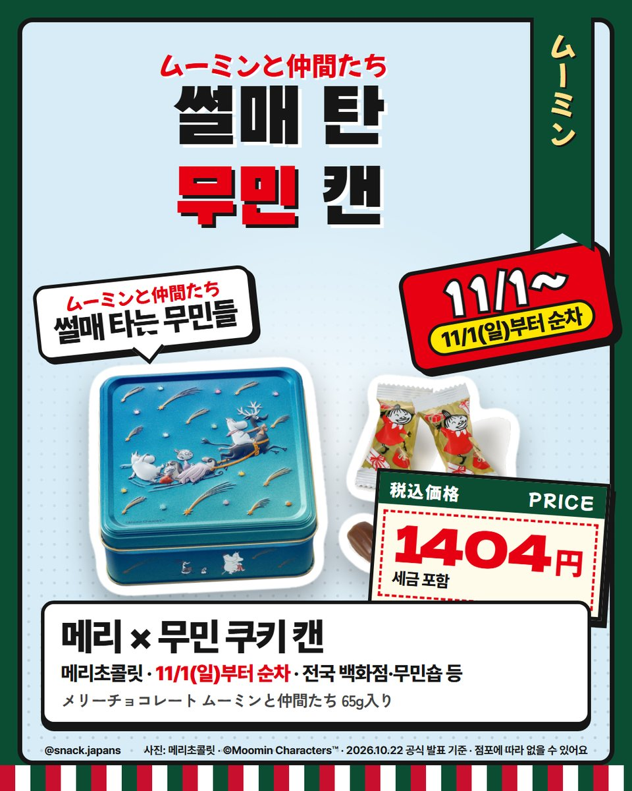
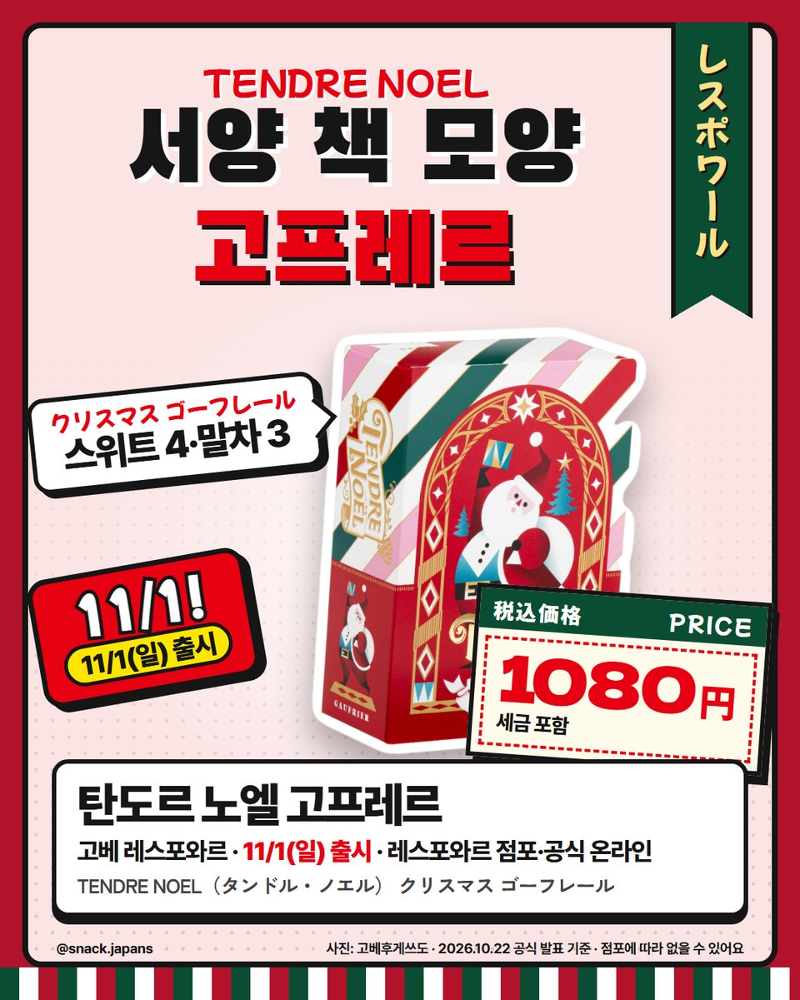
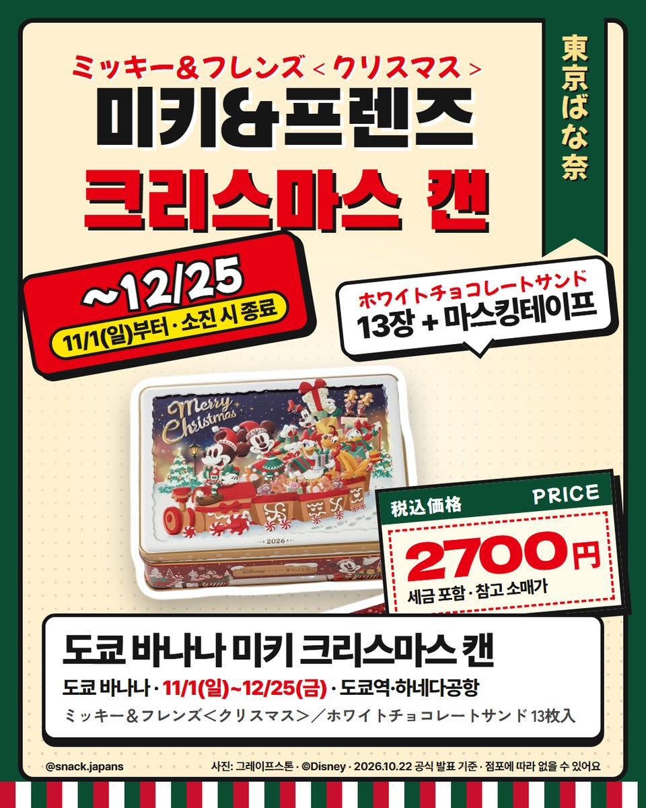

일본 크리스마스 과자 2026, 칼디 어드벤트 캘린더부터 도쿄 바나나 미키 캔까지
벌써 크리스마스 시작! 칼디 캘린더 4종, 치로루·도하토 크리스마스 과자, 11/1 한정 캔까지 9가지 모아 봤어요.
아직 할로윈도 안 끝났는데
일본은 벌써 크리스마스 과자가 나오기 시작했어요 🎄✨
칼디 어드벤트 캘린더부터 11/1에 나오는 한정 캔까지,
공식 발표로만 9가지 골라 봤어요!

1. 칼디 마법 사전 캘린더 캔
두꺼운 마법 사전처럼 생긴 캔인데
열면 크리스마스까지 하루씩 여는 어드벤트 캘린더예요.
- 안에 든 것: 사탕·초콜릿 모두 24개
- 발매: 10월 하순 예정 (칼디 발표)
- 수량 한정, 매장마다 취급이 달라요

2. 칼디 해피 홀리데이 캘린더
집 모양 상자에 작은 창이 24개!
창마다 쿠키가 들어 있어요.
- 쿠키 4종: 캐러멜&호두·아몬드 코코아·바닐라·초코칩
- 칼디 발표는 '10월 하순 발매 예정'인데
칼디 온라인에는 10/22에 이미 나와 있었어요

3. 칼디 우드하우스 캘린더 & 카운트다운 카드게임
우드하우스 캘린더는 불을 켜면
불빛이 산타·순록을 비추는 나무 집이에요.
서랍 속에 사탕이 24개 들어 있어요.
카운트다운 카드게임은 '놀 수 있는' 캘린더!
미로·색칠·틀린그림찾기 같은 카드게임 24종이 들어 있어요.
- 둘 다 10월 하순 발매 예정 (칼디 발표)
- 수량 한정

4. 치로루초코 크리스마스 컵
치로루초코가 32개 들어 있는 크리스마스 컵이에요.
크리스마스 한정 6가지 맛이고,
새 맛 '화이트 버터 쿠키'도 들어 있어요.
- 출시: 10/19 일본 전국
- 치로루 공식 온라인숍에서도 팔아요

5. 도하토 크리스마스 3종
일본 마트 과자 코너도 크리스마스 옷을 입었어요.
- 나게와 로스트치킨맛
- 캐러멜콘 화이트밀크맛 (눈사람 모양이 섞여 있을 수도 있대요)
- 꼬마 포테코 12봉 (작은 봉지 그림이 오너먼트라 트리에 달 수도 있대요)
- 출시: 10/12 일본 전국

6. 메리초콜릿 × 무민 '무민과 친구들' 캔
겨울 밤하늘에 썰매 타는 무민들이 그려진 캔이에요.
안에는 리틀 미이 포장 초코 쿠키가 들어 있어요.
- 출시: 11/1부터 순차
- 파는 곳: 전국 백화점·메리 공식 온라인·무민숍 등

7. 탄도르 노엘 크리스마스 고프레르
고베 레스포와르의 크리스마스 한정!
서양 책 모양 상자에 고프레르가 들어 있어요.
- 출시: 11/1
- 파는 곳: 레스포와르 점포·고베후게쓰도 공식 온라인

8. 도쿄 바나나 미키&프렌즈 크리스마스 캔
선물을 실은 기차를 탄 미키&프렌즈,
2026년 한정 캔이에요.
안에는 화이트초코 샌드 13장과 마스킹테이프가 들어 있어요.
- 판매: 11/1~12/25 (다 팔리면 끝)
- 파는 곳: JR도쿄역점·도쿄 바나나s·도쿄 기프트 팔레트점·하네다공항 T1·T2
- 공식 통판 접수는 10/30 10시부터

총평
- 가격: 사진 카드에 정리해 뒀어요
- 추천: 크리스마스를 미리 즐기고 싶은 사람, 일본에서 선물용 캔을 찾는 사람
- 참고: 칼디 캘린더는 매장마다 취급이 다르고 수량 한정이에요
- 기준: 2026년 10월 22일 각 회사 공식 발표
크리스마스는 역시 캘린더 하나 열면서 기다리는 맛이죠!
올해는 어떤 걸 제일 갖고 싶어요? 🎄
사진 표기: © Disney / © Moomin Characters™